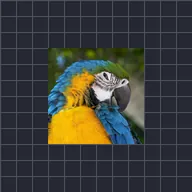

Pulsujący rozmiar

Raz po raz powiększa i zmniejsza warstwę na fali sinusoidalnej lub trójkątnej.
Pulsowanie rozmiaru powiększa i zmniejsza warstwę raz za razem. Zmniejszanie i Powiększanie to najmniejszy i największy rozmiar jako wielokrotność normalnego (0.9 to 90 %), Częstotliwość to liczba pulsów na sekundę, a Fala to Sinus (płynny) albo Trójkąt. Typowe zastosowania to bicie serca albo logo zsynchronizowane z rytmem. Zobacz także Pulsowanie krycia.
Ustawienia
| Ustawienie | Typ | Zakres | Domyślnie |
|---|---|---|---|
| Częstotliwość | Liczba | Od 0 Hz do 16 Hz | 2 Hz |
| Zmniejszanie | Liczba | Od 0 do 1 | 0.9 |
| Powiększanie | Liczba | Od 1 do 2 | 1.1 |
| Faza początkowa | Liczba | Od 0 do 2 | 0 |
| Fala | Wybór | Sinusoida, Trójkątna | Sinusoida |